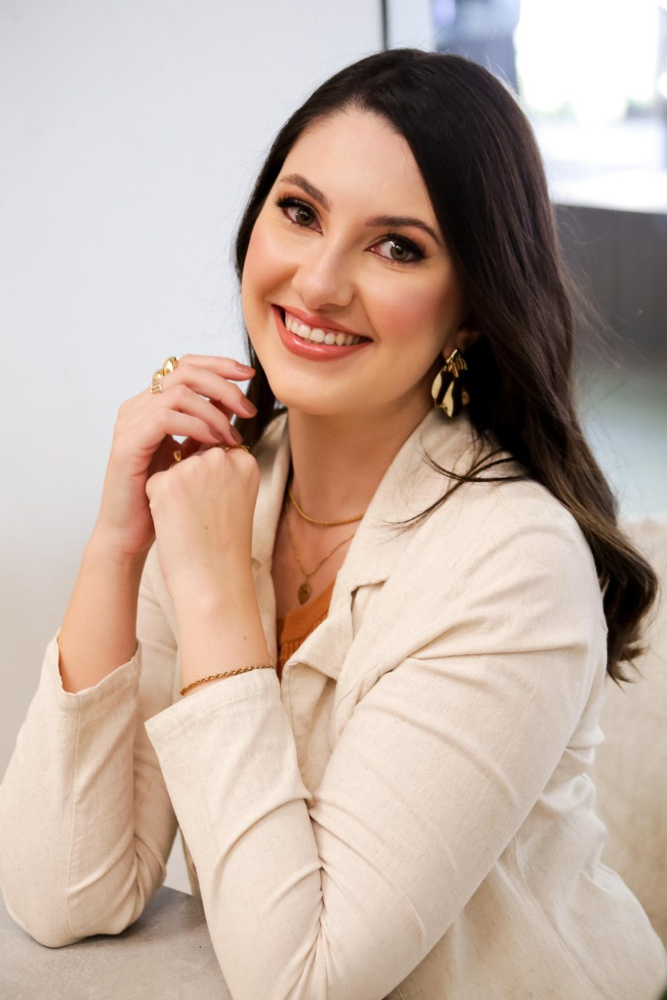
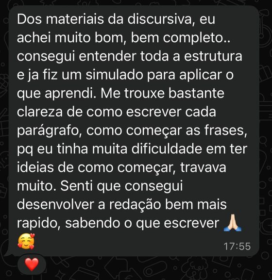
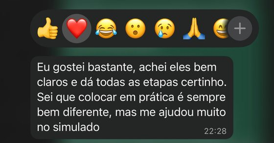
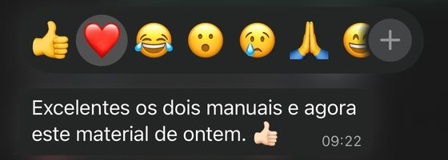
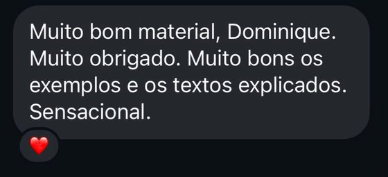

Desenvolvido especificamente para este edital
O Método da Discursiva FCC combina orientação estratégica e prática por meio de 20 redações comentadas, para ajudar você a transformar suas ideias em uma redação dissertativo-argumentativa clara, organizada e bem estruturada. Desenvolvido especificamente para as formações ambientais contempladas no concurso da Fundação Florestal/SP.
Quero acessar o Método da Discursiva FCC20 redações comentadascom redação-modelo comentada
É possível estudar, revisar os conteúdos e chegar à prova com repertório — e, ainda assim, travar diante da proposta de redação. Isso acontece porque conhecer um assunto e saber transformá-lo em um texto dissertativo-argumentativo são habilidades diferentes.
Na hora da prova, você precisa compreender o recorte apresentado, definir uma linha de argumentação, selecionar as ideias mais relevantes e desenvolvê-las de forma clara e coerente ao longo do texto.
Sem um método de escrita, cada proposta nova parece começar do zero. Com método, esse processo deixa de ser uma dúvida a cada tentativa.
Escrever uma boa redação não é esperar que as ideias apareçam no momento da prova. É seguir um processo que pode ser compreendido, treinado e repetido. O Método da Discursiva FCC ensina como interpretar a proposta, planejar o texto, definir uma linha central, organizar os argumentos e desenvolver cada parte da redação com mais segurança.
Desenvolvido para candidatos das formações ambientais contempladas no concurso da Fundação Florestal/SP que querem se preparar especificamente para a redação dissertativo-argumentativa. Ele não entrega um texto pronto para memorizar. Ensina, passo a passo, como compreender uma proposta, organizar o raciocínio e transformar suas ideias em uma redação clara, coerente e bem estruturada.
Páginas reais dos materiais
Mais do que um conteúdo para ler, o método foi pensado para desenvolver habilidades que você vai usar em qualquer proposta de redação da prova.
Identificar o tema, o recorte e o que realmente precisa ser desenvolvido.
Definir a ideia central que vai orientar toda a redação.
Planejar os argumentos antes de começar a escrever.
Construir introdução, desenvolvimento e conclusão de forma lógica.
Aprofundar as ideias sem ficar apenas em afirmações genéricas.
Fazer com que os parágrafos avancem, em vez de repetirem o mesmo ponto.
Desenvolver o tema com clareza, sem desvios e sem excesso de informações.
Aprender a construir textos sem depender de modelos decorados.
Todo o conteúdo teórico e estratégico para compreender como interpretar uma proposta, planejar o texto e construir uma redação dissertativo-argumentativa clara, coerente e bem organizada.
20 propostas de redação para praticar a interpretação do tema, a construção da tese, a seleção dos argumentos e o desenvolvimento do texto no formato previsto para a prova, cada uma com redação-modelo comentada para comparação. Escreva antes de consultar o modelo.
Uma área exclusiva e organizada, com o módulo "Primeiros Passos" orientando desde o início como estudar e aplicar o método.
Tempo de acesso pensado para acompanhar sua reta final até a prova, em 30 de agosto de 2026.
Esta oferta contempla o Método da Discursiva completo e as 20 redações comentadas. As correções individuais de redação não estão incluídas nesta modalidade, mas podem ser adquiridas separadamente, conforme disponibilidade.
Tela real da área exclusiva do aluno
É assim que o Método da Discursiva FCC transforma teoria em resultado: um ciclo simples, que você repete a cada novo treino.
Estude o método
Escolha uma proposta
Interprete o tema e defina a tese
Organize os argumentos
Escreva sua redação
Revise e compare com o modelo
Aplique no próximo treino
A prática sem análise repete erros. A prática com método gera evolução.
Existem muitos materiais de redação no mercado. A diferença do Método da Discursiva FCC está na forma como ele foi construído.
Você aprende a construir a sua redação, em vez de memorizar modelos prontos.
A teoria vem acompanhada de 20 redações comentadas para treinar de verdade.
A preparação foi direcionada à redação dissertativo-argumentativa prevista para o concurso da Fundação Florestal/SP.
Você sabe por onde começar, o que estudar, quando praticar e como evoluir.
A recomendação de escrever antes de consultar o modelo fortalece a autonomia.
O objetivo é que você dependa cada vez menos de modelos decorados.
Conteúdo pensado para ser acompanhado sem complicação.
Acesso por uma área exclusiva, com onboarding próprio no módulo Primeiros Passos.

Olá! Sou Dominique Martins Sala, Engenheira Ambiental, Mestra em Engenharia Urbana e fundadora da Estude Ambiental.
Depois de anos me sentindo perdida, desmotivada e desvalorizada em empregos que não reconheciam o meu esforço, entendi que só esforço não basta: é preciso método, direção e propósito.
Foi a partir dessa experiência que criei o Estude Ambiental: um espaço para ajudar quem, como eu um dia, sente que o esforço em estudar não está sendo suficiente.
Ao longo da mentoria, percebi um padrão em muitos candidatos da área ambiental: dominavam o conteúdo técnico, mas travavam na hora de transformar esse conhecimento em uma resposta discursiva bem estruturada. Foi para resolver exatamente esse problema que nasceu o Método da Discursiva.
Espero que este método também faça parte da sua preparação para o concurso da Fundação Florestal/SP.
Dominique Martins SalaFundadora da Estude Ambiental
Prints reais de conversas com candidatos que usaram os materiais da Estude Ambiental.




A prova do concurso da Fundação Florestal/SP (banca FCC) está marcada para 30 de agosto de 2026. Quanto antes você começar a praticar, mais tempo terá para identificar dificuldades, aperfeiçoar a estrutura do seu texto e ganhar confiança até o dia da prova.
As correções individuais de redação não estão incluídas nesta modalidade. Este é um material fechado de reta final, sem atualizações previstas.
Material produzido de forma independente pela Estude Ambiental, com base no edital do concurso da Fundação Florestal/SP, organizado pela Fundação Carlos Chagas (FCC). Sem vínculo oficial com a FCC ou com a Fundação Florestal/SP.
Você pode conhecer o conteúdo do Método da Discursiva FCC com tranquilidade. Caso, dentro de 7 dias corridos a partir da confirmação da compra, você entenda que o método não atende ao que esperava, basta solicitar o cancelamento dentro desse prazo, conforme os termos da compra. Nosso objetivo é que você avance na sua preparação com segurança, inclusive na hora de decidir.
Sua preparação não depende apenas de conhecer assuntos. Você também precisa saber interpretar uma proposta, organizar os argumentos e demonstrar suas ideias em um texto claro e coerente. Quanto antes começar a praticar, mais tempo terá para identificar dificuldades e desenvolver segurança até 30 de agosto de 2026.
Quero acessar o Método da Discursiva FCC